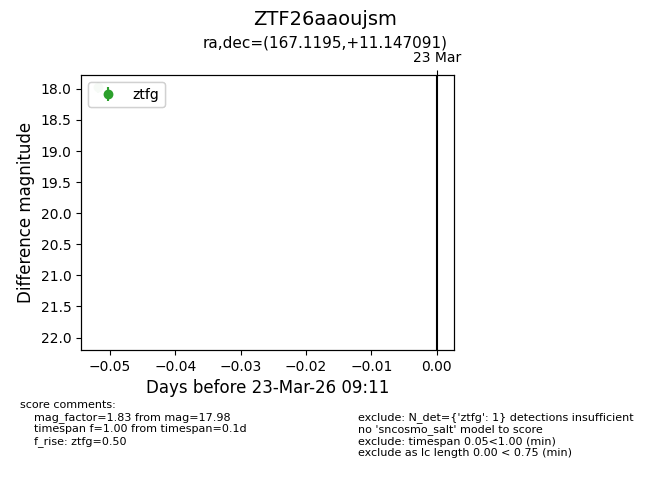
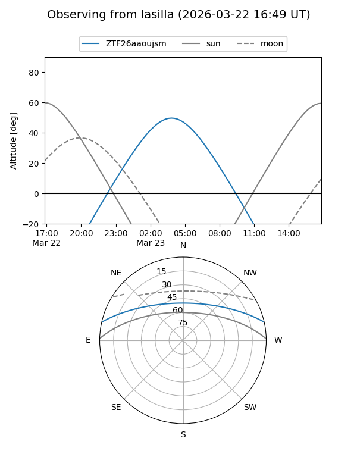
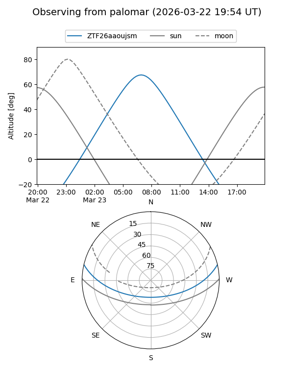

ZTF26aaoujsm
Target ZTF26aaoujsm at 2026-03-23 09:13
Aliases and brokers:
FINK: link
Lasair: link
ALeRCE: link
alt names
ZTF26aaoujsm (ztf,fink_ztf)
Coordinates:
equatorial (ra, dec) = 167.1195,+11.14709
equatorial (HMS+DMS) = 11:08:28.67,+11:08:49.53
galactic (l, b) = (241.3882,+61.01048)
Flags:
Photometry:
last ztfg=17.98
1 ztfg detections
Lightcurve

Visibility


Additional plots